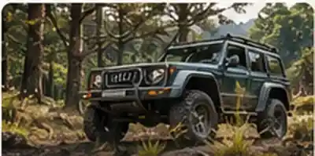
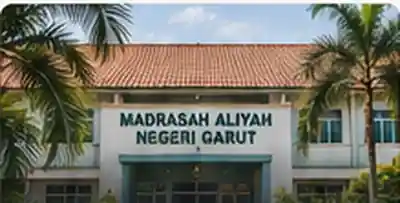

Website Bisnis
Perkenalkan profil, layanan, dan identitas usaha secara profesional.
JASA PEMBUATAN WEBSITE GARUT SANGKARA KARYA
Sangkara Karya adalah studio jasa website berbasis di Garut. Kami membantu UMKM, bisnis, sekolah, pesantren, dan organisasi membuat website yang jelas, mudah digunakan, serta sesuai kebutuhan.
LAYANAN KAMI
Mulai dari website profil, halaman promosi, sampai sistem operasional. Kami membantu menentukan solusi yang paling sesuai dengan kebutuhanmu.
Perkenalkan profil, layanan, dan identitas usaha secara profesional.
Halaman terfokus untuk promosi, kampanye, atau penawaran tertentu.
Aplikasi web untuk mendukung alur kerja dan kebutuhan khusus.
Katalog dan halaman jualan yang mudah dijelajahi pelanggan.
Desain antarmuka yang nyaman, jelas, dan selaras dengan brand.
Perbaikan, pembaruan, dan pengembangan fitur secara bertahap.
LAYANAN SESUAI KEBUTUHAN
Lihat penjelasan setiap layanan dan siapkan kebutuhanmu sebelum berdiskusi dengan kami.
Profil usaha, layanan, portofolio, dan kontak yang mudah ditemukan.
Pelajari layanan ↗Profil lembaga, berita, pengumuman, dan informasi pendaftaran.
Pelajari layanan ↗Satu halaman terarah untuk kampanye dan penawaran.
Pelajari layanan ↗Pendaftaran, pemesanan, dashboard, dan alur kerja khusus.
Pelajari layanan ↗PORTOFOLIO

Offroad BookingSistem reservasi paket wisata offroad
My SekolahPlatform pengelolaan kebutuhan sekolah Pendaftaran SantriSistem pendaftaran santri secara onlineGambar merupakan ilustrasi dari konsep desain, bukan dokumentasi atau tangkapan layar proyek yang sebenarnya.
CARA KAMI BEKERJA
Kita bahas tujuan, lingkup, dan prioritas proyek.
Menyusun desain, fitur, dan estimasi pengerjaan.
Pengembangan serta peninjauan hasil secara bertahap.
Website siap digunakan dan serah terima sesuai kesepakatan.
Ceritakan kebutuhanmu. Kami siap membantu mengubah rencana menjadi solusi digital yang tepat.
Konsultasi GratisPERTANYAAN UMUM
Waktunya bergantung pada jumlah halaman, tingkat kompleksitas fitur, dan kesiapan materi. Estimasi disampaikan setelah kebutuhan dibahas.
Bisa. Struktur halaman, tampilan, dan fungsionalitas dibicarakan sesuai tujuan bisnis atau organisasi.
Kebutuhan pemeliharaan, perbaikan, dan pengembangan lanjutan dapat dimasukkan dalam ruang lingkup kerja yang disepakati.
Bisa. Sangkara Karya berbasis di Garut dan dapat berkolaborasi secara online dengan klien dari berbagai daerah di Indonesia.